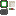

Create: Extra Gauges
附属模组
机械动力：更多仪表 是 机械动力 的一个附属模组…
这是什么
机械动力：更多仪表 是 机械动力 的一个附属模组，它通过引入新型仪表和智能逻辑工具，进一步拓展了自动化玩法。
命名空间：
extra_gauges 1.20.1 版本：本页物品与配方直接取自该版本的 jar。全部物品8

Comparator Gaugeextra_gauges:comparator_gauge
Logic Gaugeextra_gauges:logic_gauge